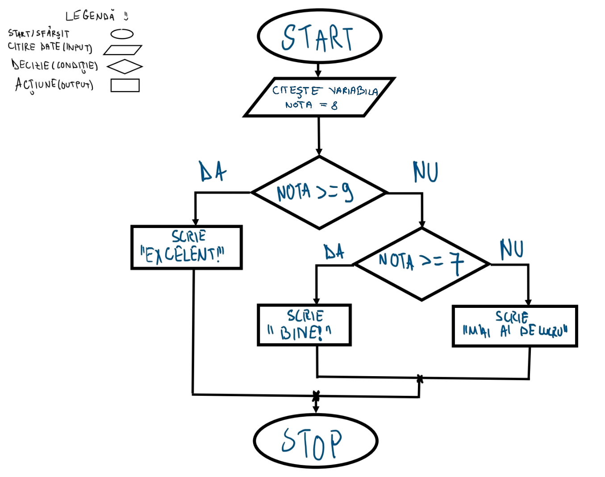

Instrucțiuni de control
Decizii, bucle și salturi – fluxul execuției în C#
Instrucțiunea if / else
Instrucțiunea if permite executarea unui bloc de cod doar dacă o condiție booleană este adevărată. else oferă o ramură alternativă pentru cazul contrar. Se pot înlănțui mai multe condiții cu else if.
if (nota >= 9) {
Console.WriteLine("Excelent!");
} else if (nota >= 7) {
Console.WriteLine("Bine!");
} else {
Console.WriteLine("Mai ai de lucru!");
}

- Condiția trebuie să fie o expresie de tip
bool(true/false). - Blocurile sunt delimitate de acolade
{ }. Pentru o singură instrucțiune, acoladele pot fi omise. - Imbricare: Se poate plasa un
ifîn interiorul altuiif.
Buclele while și do-while
while evaluează condiția înainte de fiecare iterație. do-while execută corpul cel puțin o dată, apoi verifică condiția.
int contor = 0;
while (contor < 3) {
Console.WriteLine($"Contor: {contor}");
contor++;
}
// do-while
int numar;
do {
Console.Write("Introdu un numar pozitiv: ");
numar = int.Parse(Console.ReadLine());
} while (numar <= 0);

- while este potrivit când nu se știe dinainte câte iterații sunt necesare.
- do-while este util pentru validarea input-ului utilizatorului.
- Atenție la bucle infinite: variabila din condiție trebuie modificată în interiorul buclei.
Buclele for și foreach
Buclele permit repetarea unui bloc de cod. for folosește un contor explicit, iar foreach iterează automat prin fiecare element al unei colecții.
for (int i = 0; i < 5; i++) {
Console.WriteLine($"Iteratia {i}");
}
// foreach
string[] fructe = { "mar", "banana", "portocala" };
foreach (string fruct in fructe) {
Console.WriteLine(fruct);
}

- for are 3 părți: inițializare, condiție, incrementare – separate prin
;. - foreach nu folosește index – este mai sigur pentru parcurgerea colecțiilor.
- Variabila din foreach este read-only.
Instrucțiunea switch
switch selectează o ramură de execuție pe baza valorii unei expresii. Este mai curat decât mai multe if-else atunci când se compară aceeași variabilă cu mai multe valori fixe.
switch (zi) {
case "Luni":
Console.WriteLine("Inceput de saptamana!");
break;
case "Vineri":
Console.WriteLine("Weekendul bate la usa!");
break;
default:
Console.WriteLine("O zi obisnuita.");
break;
}

- break iese din switch după fiecare caz (obligatoriu în C#).
- default este ramura executată când niciun caz nu se potrivește.
- Switch expressions (C# 8+):
var rezultat = zi switch { "Luni" => "Start", _ => "Altceva" };
Salturi: break și continue
break iese imediat din buclă. continue sare peste restul codului din iterația curentă și trece la următoarea.
for (int i = 1; i <= 10; i++) {
if (i == 5) break;
Console.Write(i + " "); // 1 2 3 4
}
// continue
for (int i = 1; i <= 10; i++) {
if (i % 2 == 0) continue;
Console.Write(i + " "); // 1 3 5 7 9
}
- break oprește complet execuția buclei.
- continue sare doar peste iterația curentă.
- Funcționează în
for,foreach,whileșido-while.